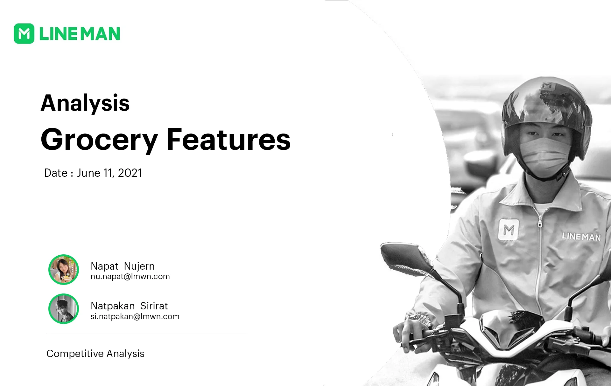
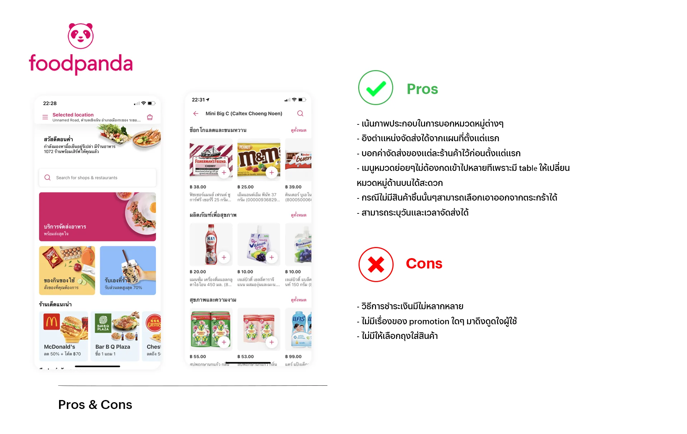
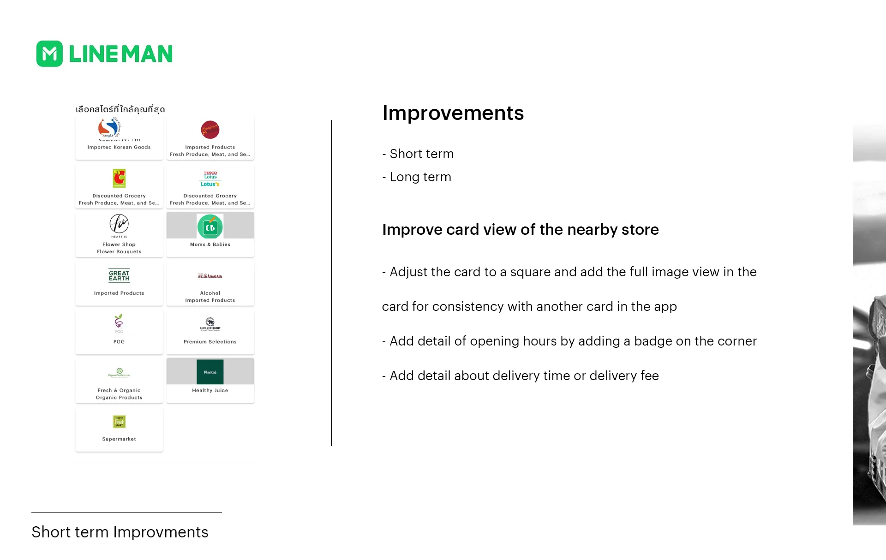
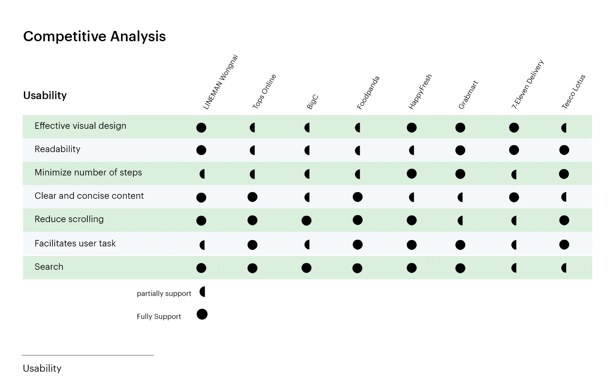

ฟีเจอร์ Mart - UX Research
โปรเจกต์ที่ผมทำตอนฝึกงานที่ LMWN เป็นครั้งแรกที่ได้ทำงาน UX
ดูงาน
ลูกค้า
LMWN
ประเภทงาน
UX Research
ช่วงเวลา
มิ.ย. 2021
-
มิ.ย. 2021
งานที่ทำ
ภาพรวม
นี่เป็นโปรเจกต์ที่ผมทำตอนฝึกงานที่ LMWN (LINE MAN Wongnai) ผมได้ทำ UX Research วิเคราะห์จุดแข็งและจุดอ่อนของคู่แข่งทั้งทางตรงและทางอ้อม หาทิศทางในการพัฒนาฟีเจอร์ทั้งระยะสั้นและระยะยาว แล้วสุดท้ายก็นำเสนอพร้อม feedback ให้ทีมเอาไปใช้ต่อ
โปรเจกต์นี้ผมทำร่วมกับเพื่อนในทีม สิ่งสำคัญที่ได้คือทักษะการรีเสิร์ชที่พัฒนาขึ้นมาก โดยเฉพาะการขุดหา insight ที่เราต้องการ กระบวนการเหล่านี้สำคัญมากต่อการออกแบบที่ดีด้วย

เป้าหมายหลักมีดังนี้:

Competitor Analysis
เป็นครั้งแรกที่เราได้ลงลึกและเก็บข้อมูลแบบละเอียด เราไล่เรียงคู่แข่งทั้งหมดออกมาก่อน แล้วจัดลำดับความสำคัญว่าเจ้าไหนน่าสนใจที่สุด จะได้โฟกัสถูกเป้า ภาพนี้เป็นแค่ตัวอย่างคร่าวๆ (เพราะบางส่วนเป็นความลับของบริษัท)


Competitive Audit

ลิงก์